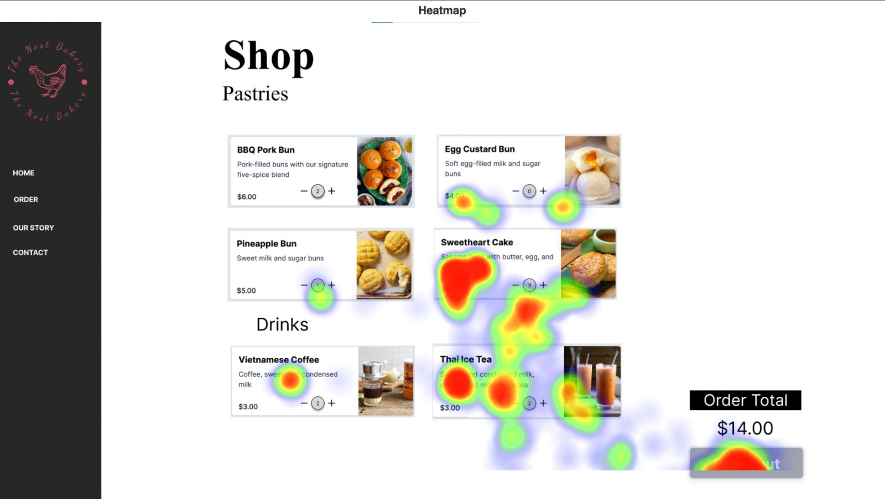
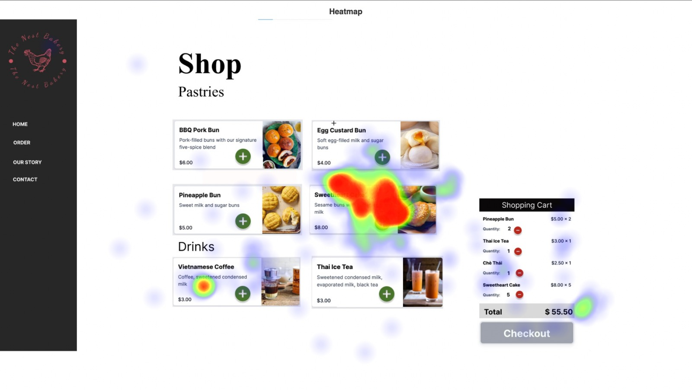
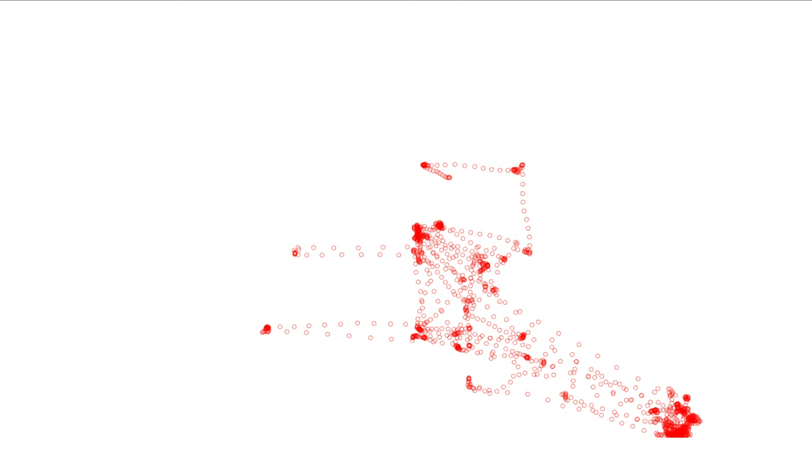
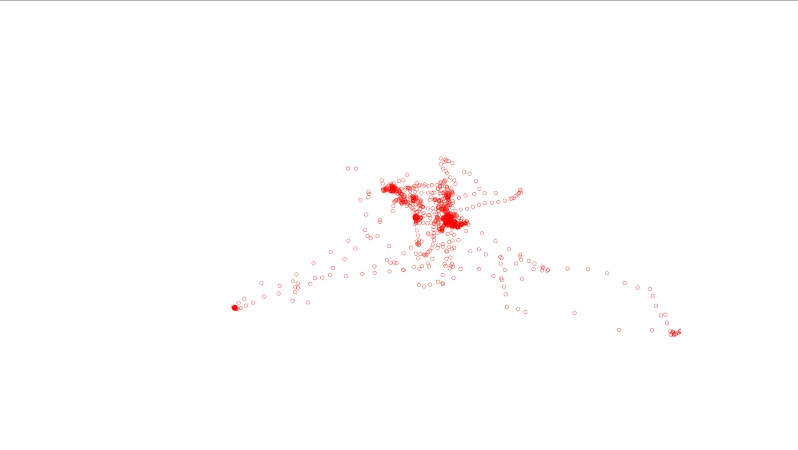

Project Overview
This project aims to understand the value of quantitative and qualitative user tests for evaluating different UI designs. User behavior data is collected and analyzed through quantitative data in A/B Testing and qualitative data in Eye Tracking.
The Problem
A/B Testing is a common technique used to evaluate an interface’s performance by randomly presenting version A and version B to users. Between these versions, data is collected and analyzed to test hypotheses, evaluate performance, and inform design changes or improvements to the experience. Eye Tracking is also a standard method for assessing the performance of a page. While A/B Testing is quantitative, Eye Tracking is its qualitative counterpart. It is used in industry to evaluate the usability of a page, as well as how efficient it is at guiding users.
Design Approach
We redesigned two static pairs of the bakery homepage and called one version A and another version B). To analyze the eye tracking data, we generated a heatmap (a still image that depicts where your user gazes were fixed) and an animated replay of their gaze motion; both overlaid on the interface to see what interface elements test participants were looking at. We wanted to see whether the results matched our expectations.
   Lessons learned
A/B testing and Eye-tracking are powerful approaches to qualitatively and quantitatively measure the efficiency of a user interface. The data analysis results informed us of the necessary changes that improved our user interface. As we thought before, the results matched our hypothesis. I also learned a lot about hypothesis formulation and evaluation..